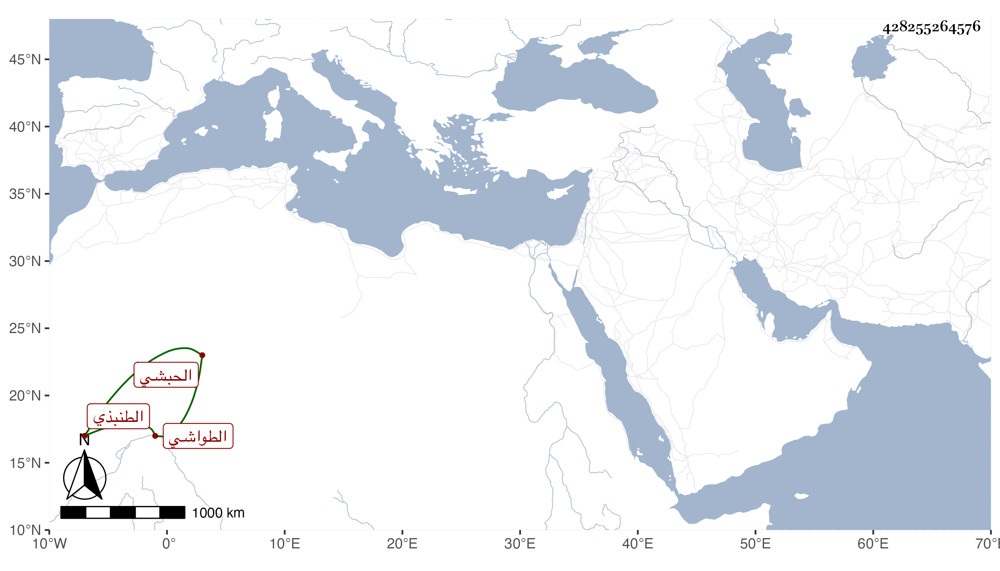

0902Sakhawi.DawLamic.ITO20230111-ara1.EIS1600.428255264576
Biography ID: 428255264576
465
عنبر الحبشي الطنبذي الطواشي . من خدام التاجر نور الدين الطنبذي ثم خدم عند جماعة من الأمراء إلى أن اتصل بخدمة الظاهر جقمق وصار من مقدمي الطباق البرانية ثم رقاه لنيابة مقدم المماليك من غير تأهل لها بعد انتقال مرجان الحصني إلى المقدمية فأثرى وصلح حاله وعمر الأملاك بل بنى في أواخر عمره مدرسة بالباطلية . مات بعد صرف الظاهر خشقدم له عن النيابة في المحرم سنة سبع وستين عفا الله عنه ورحمه .
